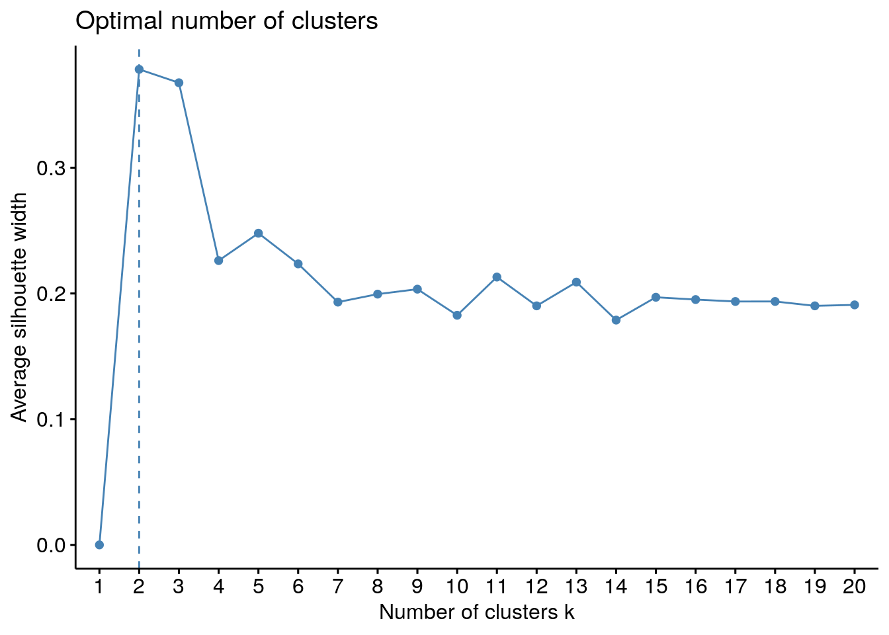

Cluster
Comenzaremos esta parte de a práctica explorando la capacidad que tiene nuestro dataset de ser segmentado calculando sobre el dataset un estadístico denominado “Estadístico de Hopkins” en el que, si tiene un valor cercano a uno y mayor de 0.5, indica que muy posiblemente el dataset pueda ser dividido en clusters de manera significativa.
Como vemos por el valor que tiene esta métrica, sí que parece que nuestro dataset pueda ser dividido en grupos.
## [1] 0.9518797En primer lugar, intentaremos realizar el clustering sólo sobre las variables contínuas o numéricas, ignormando las variables factoriales, debido a que se puede aplicar directamente sobre ellas la métrica euclidea y, por tanto, el algoritmo k-means. En primer lugar intentaremos obtener el número óptimo de grupos que podemos formar mediante un gráfico de silueta:

Este gráfico nos muestra que el valor óptimo se encuentra en 2. No obstante, elegiremos 3 grupos debido a que esta cantidad será la que salgo después a utilizar otra métrica que tiene en cuenta también las variables que son factores u ordinales. El gráfico con el resultado del proceso de clustering una vez realizado una descomposición PCA sobre el dataset y cogido las dos dimensiones más significativas es el siguiente:

Ahora intentaremos realizar el proceso de clustering teniendo en cuenta también las variables cualitativas (tanto factoriales como ordinales). Para ello calcularemos una matriz de disimilaridad denominada “matriz de disimilaridad de Gower”
## 3093828 dissimilarities, summarized :
## Min. 1st Qu. Median Mean 3rd Qu. Max.
## 0.0000058 0.2054900 0.2495900 0.2500700 0.2937300 0.6546800
## Metric : mixed ; Types = I, I, I, I, N, N, N, N, N, N, N, N, N, N, N, N, T, T, T, T, I, T, T, T, T, T, I, T, T, I, T, I, I, T, I, T, N, N, I, N, I, N, I, I, I, I, I
## Number of objects : 2488Una vez calculada esta matriz, obtendremos los elementos más parecidos para ver que los resultados son coherentes:
## # A tibble: 2 x 47
## GrLivArea LotArea Total_Bathrooms Total_porch_SF MSZoning LandContour
## <dbl> <dbl> <dbl> <dbl> <fct> <fct>
## 1 2787 7939 7 312 RL Lvl
## 2 2787 7976 7 312 RL Lvl
## # … with 41 more variables: LotConfig <fct>, Condition1 <fct>, BldgType <fct>,
## # HouseStyle <fct>, RoofStyle <fct>, MasVnrType <fct>, Foundation <fct>,
## # SaleType <fct>, SaleCondition <fct>, YearBuilt <fct>, OverallQual <dbl>,
## # OverallCond <dbl>, PavedDrive <fct>, Fence <fct>, BsmtFinSF1 <dbl>,
## # Functional <fct>, ExterQual <fct>, BsmtQual <fct>, BsmtExposure <fct>,
## # BsmtFinType1 <fct>, BsmtUnfSF <dbl>, CentralAir <fct>, KitchenQual <fct>,
## # Fireplaces <dbl>, FireplaceQu <fct>, BedroomAbvGr <dbl>,
## # KitchenAbvGr <dbl>, LotShape <fct>, GarageArea <dbl>, GarageCond <fct>,
## # Neighborhood <fct>, Alley <fct>, TotalSF <dbl>, GarageType <fct>,
## # MasVnrArea <dbl>, MSSubClass <fct>, TotalBsmtSF <dbl>, WoodDeckSF <dbl>,
## # OpenPorchSF <dbl>, EnclosedPorch <dbl>, SalePrice <dbl>Y también mostraremos los elementos más disimilares dentro del dataset:
## # A tibble: 2 x 47
## GrLivArea LotArea Total_Bathrooms Total_porch_SF MSZoning LandContour
## <dbl> <dbl> <dbl> <dbl> <fct> <fct>
## 1 810 21780 1 143 4 Lvl
## 2 5642 63887 4.5 506 RL Bnk
## # … with 41 more variables: LotConfig <fct>, Condition1 <fct>, BldgType <fct>,
## # HouseStyle <fct>, RoofStyle <fct>, MasVnrType <fct>, Foundation <fct>,
## # SaleType <fct>, SaleCondition <fct>, YearBuilt <fct>, OverallQual <dbl>,
## # OverallCond <dbl>, PavedDrive <fct>, Fence <fct>, BsmtFinSF1 <dbl>,
## # Functional <fct>, ExterQual <fct>, BsmtQual <fct>, BsmtExposure <fct>,
## # BsmtFinType1 <fct>, BsmtUnfSF <dbl>, CentralAir <fct>, KitchenQual <fct>,
## # Fireplaces <dbl>, FireplaceQu <fct>, BedroomAbvGr <dbl>,
## # KitchenAbvGr <dbl>, LotShape <fct>, GarageArea <dbl>, GarageCond <fct>,
## # Neighborhood <fct>, Alley <fct>, TotalSF <dbl>, GarageType <fct>,
## # MasVnrArea <dbl>, MSSubClass <fct>, TotalBsmtSF <dbl>, WoodDeckSF <dbl>,
## # OpenPorchSF <dbl>, EnclosedPorch <dbl>, SalePrice <dbl>Por último, obtendremos el gráfico número de clústeres/“Silouette with” para intentar ver cuál es el número óptimo de divisiones:

Como vemos el número óptimo se encuentra en 3 elementos, que será el que elijamos como número de divisiones en nuestro dataset. A continuación utilizando esta matriz de disimilaridades y el proceso de clustering PAM, calcularemos a qué elemento dentro del cluster pertenece cada uno de los registros de nuestro dataset.
A continuación realizaremos un proceso de reducción de dimensionalidad a 2 dimensiones utilizando el algoritmo TSNE para hacernos una idea más clara de la forma que tienen estas agrupaciones. El resultado parece un poco extraño porque, aunque se ve que sí que hay 3 agrupaciones, la forma en la que se han colocado los puntos parece indicar que existe la posibilidad de generar 4 grupos.

Ahora intentaremos interpretar el resultado de este proceso de clustering. Para ello, en un primer momento observaremos si esta segmentación ha sido realizada teniendo el precio de cada casa como variable principal

Lo que vemos en el anterior gráfico es que los elementos pertenecientes al primer cluster tienen un precio mucho mayor en media que los del segundo y tercero. No se observan diferencias significativas en el precio de los segundos y terceros grupos, por lo que esta clasificación a priori no nos permite dividir las casas en 3 tipos distinguidos por precio.
El siguiente código realiza un cálculo de los estadísticos principales de cada una de las variables agrupadas por valor resultante del cluster.
Para ayudar a la interpretación de los resultados, construiremos un árbol de decision teniendo como objetivo del mismo el resultado del proceso de clústering.


Ahora intentaremos obtener de una forma más legible las reglas de decisión que son equivalentes al árbol resultante para hacer más legible los resultados.
| rule |
|---|
| YearBuilt %in% c(“1980_1990”, “1990_”) & MSSubClass %in% c(“NA”, “NA”, “NA”, “1_5 story_fin”, “2_story_1946_”, “NA”, “split_multi_level”, “NA”, “2_story_PUD_1946”, “NA”) & MasVnrType %in% c(“NA”, “BrkFace”) & LotShape %in% c(“IR3”, “Reg”) & BsmtFinSF1 >= 114 |
| YearBuilt %in% c(“1980_1990”, “1990_”) & MSSubClass %in% c(“1_story_1946_”, “NA”, “NA”, “NA”, “NA”, “2_5_story_all_ages”, “split_foyer”, “duplex_all_style_age”, “1_story_PUD_1946_”, “NA”, “PUD_multilevel”, “NA”) & MasVnrType %in% c(“3”, “NA”, “BrkFace”, “Stone”) |
| YearBuilt %in% c(“1910", "1910_1920", "1920_1930", "1930_1940", "1940_1950", "1950_1960", "1960_1970", "1970_1980") & MSSubClass %in% c("1_story_1946”, “1_story_1945_”, “1_story_unf_attic”, “1_5_story_unf”, “1_5 story_fin”, “split_multi_level”, “split_foyer”, “duplex_all_style_age”, “1_story_PUD_1946_”, “2_story_PUD_1946”, “PUD_multilevel”, “2_family_conversion”) & Neighborhood %in% c(“NA”, “Blueste”, “BrDale”, “BrkSide”, “CollgCr”, “Edwards”, “Gilbert”, “IDOTRR”, “MeadowV”, “Mitchel”, “NAmes”, “NA”, “NPkVill”, “NA”, “OldTown”, “Sawyer”, “NA”, “NA”) & Foundation %in% c(“PConc”, “NA”) & FireplaceQu %in% c(“Fa”, “TA”, “Gd”, “NA”) |
| YearBuilt %in% c(“1980_1990”, “1990_”) & MSSubClass %in% c(“1_story_1946_”, “NA”, “NA”, “NA”, “NA”, “2_5_story_all_ages”, “split_foyer”, “duplex_all_style_age”, “1_story_PUD_1946_”, “NA”, “PUD_multilevel”, “NA”) & MasVnrType %in% c(“NA”, “None”) & TotalSF >= 2348.5 & LotShape %in% c(“IR3”, “Reg”) |
| YearBuilt %in% c(“1910", "1910_1920", "1920_1930", "1930_1940", "1940_1950", "1950_1960", "1960_1970", "1970_1980") & MSSubClass %in% c("1_story_1946”, “1_story_1945_”, “1_story_unf_attic”, “1_5_story_unf”, “1_5 story_fin”, “split_multi_level”, “split_foyer”, “duplex_all_style_age”, “1_story_PUD_1946_”, “2_story_PUD_1946”, “PUD_multilevel”, “2_family_conversion”) & Neighborhood %in% c(“NA”, “ClearCr”, “Crawfor”, “NA”, “NA”, “NWAmes”, “SawyerW”, “NA”, “NA”, “SWISU”, “Timber”, “Veenker”) & MasVnrArea >= 80.5 & FireplaceQu %in% c(“Po”, “Fa”, “TA”, “NA”) |
| YearBuilt %in% c(“1980_1990”, “1990_”) & MSSubClass %in% c(“1_story_1946_”, “NA”, “NA”, “NA”, “NA”, “2_5_story_all_ages”, “split_foyer”, “duplex_all_style_age”, “1_story_PUD_1946_”, “NA”, “PUD_multilevel”, “NA”) & MasVnrType %in% c(“NA”, “None”) & TotalSF >= 2348.5 & LotShape %in% c(“IR1”, “IR2”) & Neighborhood %in% c(“NA”, “NA”, “NA”, “CollgCr”, “NA”, “NA”, “NA”, “NA”, “NridgHt”, “NWAmes”, “NA”, “NA”, “SawyerW”, “NA”, “Timber”, “Veenker”) |
| rule |
|---|
| YearBuilt %in% c(“1910", "1910_1920", "1920_1930", "1930_1940", "1940_1950", "1950_1960", "1960_1970", "1970_1980") & MSSubClass %in% c("2_story_1946”, “2_story_1945_”, “2_5_story_all_ages”, “1_5_story_PUD_all”) & FireplaceQu %in% c(“Po”, “TA”, “Gd”, “Ex”) & LotShape %in% c(“IR1”, “IR2”, “NA”) |
| YearBuilt %in% c(“1980_1990”, “1990_”) & MSSubClass %in% c(“NA”, “NA”, “NA”, “1_5 story_fin”, “2_story_1946_”, “NA”, “split_multi_level”, “NA”, “2_story_PUD_1946”, “NA”) & MasVnrType %in% c(“3”, “NA”, “None”, “Stone”) |
| YearBuilt %in% c(“1980_1990”, “1990_”) & MSSubClass %in% c(“NA”, “NA”, “NA”, “1_5 story_fin”, “2_story_1946_”, “NA”, “split_multi_level”, “NA”, “2_story_PUD_1946”, “NA”) & MasVnrType %in% c(“NA”, “BrkFace”) & LotShape %in% c(“IR1”, “IR2”) |
| YearBuilt %in% c(“1980_1990”, “1990_”) & MSSubClass %in% c(“NA”, “NA”, “NA”, “1_5 story_fin”, “2_story_1946_”, “NA”, “split_multi_level”, “NA”, “2_story_PUD_1946”, “NA”) & MasVnrType %in% c(“NA”, “BrkFace”) & LotShape %in% c(“IR3”, “Reg”) & BsmtFinSF1 < 114 |
| YearBuilt %in% c(“1910", "1910_1920", "1920_1930", "1930_1940", "1940_1950", "1950_1960", "1960_1970", "1970_1980") & MSSubClass %in% c("2_story_1946”, “2_story_1945_”, “2_5_story_all_ages”, “1_5_story_PUD_all”) & FireplaceQu %in% c(“Po”, “TA”, “Gd”, “Ex”) & LotShape %in% c(“NA”, “Reg”) & KitchenQual %in% c(“Gd”, “Ex”, “NA”) |
| YearBuilt %in% c(“1980_1990”, “1990_”) & MSSubClass %in% c(“1_story_1946_”, “NA”, “NA”, “NA”, “NA”, “2_5_story_all_ages”, “split_foyer”, “duplex_all_style_age”, “1_story_PUD_1946_”, “NA”, “PUD_multilevel”, “NA”) & MasVnrType %in% c(“NA”, “None”) & TotalSF >= 2348.5 & LotShape %in% c(“IR1”, “IR2”) & Neighborhood %in% c(“NA”, “Blueste”, “NA”, “NA”, “ClearCr”, “Crawfor”, “NA”, “Gilbert”, “NA”, “NA”, “Mitchel”, “NAmes”, “NoRidge”, “NA”, “NA”, “NA”, “Somerst”, “StoneBr”, “NA”) |
| rule |
|---|
| YearBuilt %in% c(“1910", "1910_1920", "1920_1930", "1930_1940", "1940_1950", "1950_1960", "1960_1970", "1970_1980") & MSSubClass %in% c("1_story_1946”, “1_story_1945_”, “1_story_unf_attic”, “1_5_story_unf”, “1_5 story_fin”, “split_multi_level”, “split_foyer”, “duplex_all_style_age”, “1_story_PUD_1946_”, “2_story_PUD_1946”, “PUD_multilevel”, “2_family_conversion”) & Neighborhood %in% c(“NA”, “Blueste”, “BrDale”, “BrkSide”, “CollgCr”, “Edwards”, “Gilbert”, “IDOTRR”, “MeadowV”, “Mitchel”, “NAmes”, “NA”, “NPkVill”, “NA”, “OldTown”, “Sawyer”, “NA”, “NA”) & Foundation %in% c(“BrkTil”, “CBlock”, “Slab”, “Stone”, “NA”) |
| YearBuilt %in% c(“1910", "1910_1920", "1920_1930", "1930_1940", "1940_1950", "1950_1960", "1960_1970", "1970_1980") & MSSubClass %in% c("1_story_1946”, “1_story_1945_”, “1_story_unf_attic”, “1_5_story_unf”, “1_5 story_fin”, “split_multi_level”, “split_foyer”, “duplex_all_style_age”, “1_story_PUD_1946_”, “2_story_PUD_1946”, “PUD_multilevel”, “2_family_conversion”) & Neighborhood %in% c(“NA”, “ClearCr”, “Crawfor”, “NA”, “NA”, “NWAmes”, “SawyerW”, “NA”, “NA”, “SWISU”, “Timber”, “Veenker”) & MasVnrArea < 80.5 |
| YearBuilt %in% c(“1980_1990”, “1990_”) & MSSubClass %in% c(“1_story_1946_”, “NA”, “NA”, “NA”, “NA”, “2_5_story_all_ages”, “split_foyer”, “duplex_all_style_age”, “1_story_PUD_1946_”, “NA”, “PUD_multilevel”, “NA”) & MasVnrType %in% c(“NA”, “None”) & TotalSF < 2348.5 |
| YearBuilt %in% c(“1910", "1910_1920", "1920_1930", "1930_1940", "1940_1950", "1950_1960", "1960_1970", "1970_1980") & MSSubClass %in% c("2_story_1946”, “2_story_1945_”, “2_5_story_all_ages”, “1_5_story_PUD_all”) & FireplaceQu %in% c(“NA”, “Fa”) |
| YearBuilt %in% c(“1910", "1910_1920", "1920_1930", "1930_1940", "1940_1950", "1950_1960", "1960_1970", "1970_1980") & MSSubClass %in% c("1_story_1946”, “1_story_1945_”, “1_story_unf_attic”, “1_5_story_unf”, “1_5 story_fin”, “split_multi_level”, “split_foyer”, “duplex_all_style_age”, “1_story_PUD_1946_”, “2_story_PUD_1946”, “PUD_multilevel”, “2_family_conversion”) & Neighborhood %in% c(“NA”, “Blueste”, “BrDale”, “BrkSide”, “CollgCr”, “Edwards”, “Gilbert”, “IDOTRR”, “MeadowV”, “Mitchel”, “NAmes”, “NA”, “NPkVill”, “NA”, “OldTown”, “Sawyer”, “NA”, “NA”) & Foundation %in% c(“PConc”, “NA”) & FireplaceQu %in% c(“NA”, “Po”, “NA”) |
| YearBuilt %in% c(“1910", "1910_1920", "1920_1930", "1930_1940", "1940_1950", "1950_1960", "1960_1970", "1970_1980") & MSSubClass %in% c("2_story_1946”, “2_story_1945_”, “2_5_story_all_ages”, “1_5_story_PUD_all”) & FireplaceQu %in% c(“Po”, “TA”, “Gd”, “Ex”) & LotShape %in% c(“NA”, “Reg”) & KitchenQual %in% c(“Fa”, “TA”, “NA”) |
| YearBuilt %in% c(“1910", "1910_1920", "1920_1930", "1930_1940", "1940_1950", "1950_1960", "1960_1970", "1970_1980") & MSSubClass %in% c("1_story_1946”, “1_story_1945_”, “1_story_unf_attic”, “1_5_story_unf”, “1_5 story_fin”, “split_multi_level”, “split_foyer”, “duplex_all_style_age”, “1_story_PUD_1946_”, “2_story_PUD_1946”, “PUD_multilevel”, “2_family_conversion”) & Neighborhood %in% c(“NA”, “ClearCr”, “Crawfor”, “NA”, “NA”, “NWAmes”, “SawyerW”, “NA”, “NA”, “SWISU”, “Timber”, “Veenker”) & MasVnrArea >= 80.5 & FireplaceQu %in% c(“NA”, “Gd”, “NA”) |
Ahora intentaremos utilizar otro algoritmo de clústering distinto, DBSCAN, basado en agrupamiento espacial basado en densidad. No obstante, debido a la naturaleza de los datos, no hemos sido capaces de dividir este dataset en 3 clústeres distintos por mucho que hemos jugado con los parámetros.


Y por último, pasaremos un algoritmo de clústering jerárquico para ver si tenemos resultados distintos a los obtenidos por KNN o por PAM. El resultado obtenido parece ser similar a los anteriores (y la gráfica obtenida más confusa):
hclust_avg <- hclust(gower_dist, method = 'complete')
plot(hclust_avg)
y_hc = cutree(hclust_avg, 3)
clusplot(dataSetClustering,
y_hc,
lines = 0,
shade = TRUE,
color = TRUE,
labels= 2,
plotchar = FALSE,
span = TRUE,
main = paste('Clusters of customers'),
xlab = 'dimx',
ylab = 'dimy')